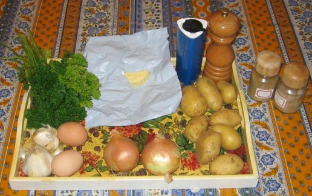
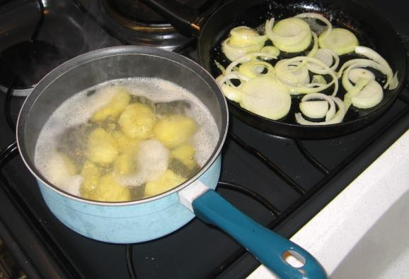
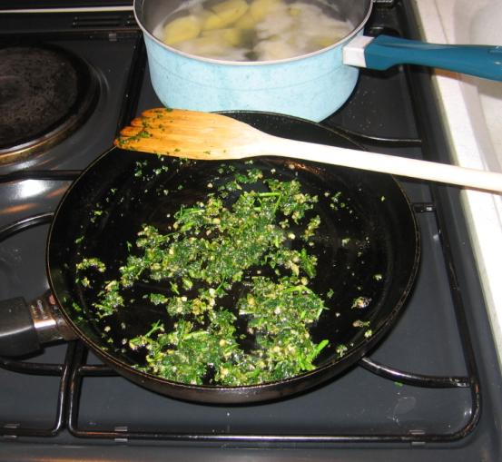
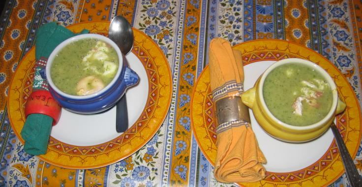

| Ingrédients
(pour 4
personnes) : - 8 grosses pommes de terre - 8 gousses d'ail - 2 litres d'eau - un gros bouquet de persil - 2 gros oignons jaunes - une cuiller à soupe de beurre ou de margarine - 100 g de lard pas trop gras (cf. observation n°2) - une pincée de marjolaine (cf. observation n°3) - une pincée de livêche, encore appelé ache des montagnes ou céleri perpétuel (cf. observation n°4) - sel et poivre selon goût |
 |
 |
Préparation : - mettre l'eau dans une casserole sans la mettre à chauffer tant que les pommes de terre n'y sont pas (sinon cela fait de la colle) - éplucher les pommes de terre, les débiter en rondelles et les jeter dans l'eau froide au fur et à mesure - mettre l'eau et les pommes de terre à chauffer à feu vif - hacher ail et persil et réserver - hacher les oignons grossièrement et réserver - faire revenir les oignons à la poêle dans un peu de beurre sans les brûler et réserver - faire revenir très peu de temps (30 secondes par exemple) ail et persil dans un peu de beurre à la poêle, puis mélanger aux oignons et réserver - faire revenir le lard sans beurre s'il a assez de gras, puis réserver |
 |
- quand les pommes de terre sont
cuites, passer au mixer
électrique dans l'eau de cuisson, puis saler et poivrer selon
goût - ajouter à la soupe la marjolaine et la livêche et remuer à la cuiller - ajouter à la soupe ce qu'on a réservé après friture (ail, persil, oignons, lard), puis passer le tout une dernière fois au mixer - servir immédiatement en petites soupières ou garder au chaud au four à 100C Observations : 1 - recette exécutée le 9 octobre 2006 à Rennes pour F et moi ; absolument délicieux malgré quelques complications inutiles de ma part (cf. observation n°2 ci-après) 2 - n'ayant pas de lard sous la main, j'ai cru bien faire en remplaçant cette protéine animale par une autre : des eoufs entiers pochés dans l'eau puis mis dans la soupe ; c'est très bon mais aussi très compliqué comme tous les oeufs pochés, et on ne retrouve de toute façon pas le bon goût du lard grillé ; donc je recommande de s'en tenir à la recette de Kurt (il faut que je pense à demander à Kurt comment on traduit en allemand le dicton "le mieux est l'ennemi du bien") |
